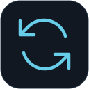
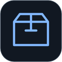
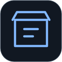
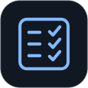
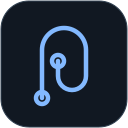
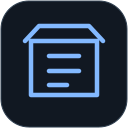
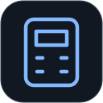
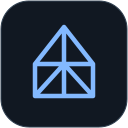
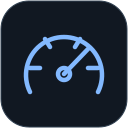
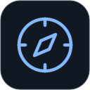

El ecosistema Tenkai
Herramientas que
trabajan contigo.
Explora la solución por tarea y conoce sus requisitos antes de elegir.
Comercio y sucursales
Del mostrador a la bodega.
De una tienda a varias.
Tenkai POS
El centro de tu negocio
Cobra, controla tu mercancía y entiende tus resultados desde un mismo lugar. La operación principal trabaja en tu computadora, incluso cuando no tienes internet.
Explorar POSTenkai Inventory
De la bodega a la tienda
Lleva tu catálogo en el celular. Cuenta y prepara la mercancía en la bodega, aunque no haya señal. Al llegar a la tienda, conecta con POS, revisa el lote y confirma la entrada sin volver a capturar cada artículo.
Explorar InventoryTenkai MultiPos
Más cajas para atender
Agrega una terminal para atender a más clientes. Cada cajero trabaja con su sesión, mientras el POS principal concentra catálogo, cobros, inventario y resultados.
Explorar MultiPosTenkai Resguardo
Continuidad preparada
Prepara otro dispositivo con una copia autorizada del catálogo. Durante una contingencia registra ventas y movimientos; cuando vuelva el POS, envía lo pendiente para su revisión y conciliación.
Explorar ResguardoTenkai Boss
La vista del dueño
Consulta qué sucursales están conectadas, revisa sus existencias y operaciones y administra productos y precios desde tu celular. Boss trabaja junto con el servicio Sync para llevar tus cambios a las tiendas.
Explorar Boss
Servicio opcional para sucursalesTenkai Sync
Una política de precios
Conecta los POS de tus sucursales con Boss. Distribuye cambios del catálogo y recibe reportes para que el dueño supervise qué información llegó y qué tiendas ya la aplicaron.
Explorar SyncMás herramientas del dominio
Distribución, creación
y trabajo cotidiano.

Tenkai Distribution
Catálogos y operación de proveedores.
Distribution Host
Organiza el trabajo compartido del proveedor.

Distribution Cliente
Consulta e intercambio de catálogos.

Distribution Admin
Administración del ecosistema de distribución.

Tenkai Routes
Almacén y sucursales: embarques, catálogos y auditorías. En desarrollo.

Tenkai IA · Inventory Management
Compañero de Routes para conteos y recepciones de almacén. En desarrollo.

Calculator 3D
Cálculos para impresión y fabricación.

Forge Suite
Utilidades para makers y fabricación.
Tenkai Music
Reproducción y experiencia musical.

Race Engineer
Asistencia para tu experiencia de conducción.

Tenkai Browser
Navegación y herramientas para Windows.

Otros proyectos
Conoce las herramientas y proyectos de Tenkai.
Empecemos por tu negocio
Haz espacio para un mejor día de trabajo.
Cuéntanos cómo trabajas. Te ayudamos a elegir las aplicaciones y módulos que necesitas.